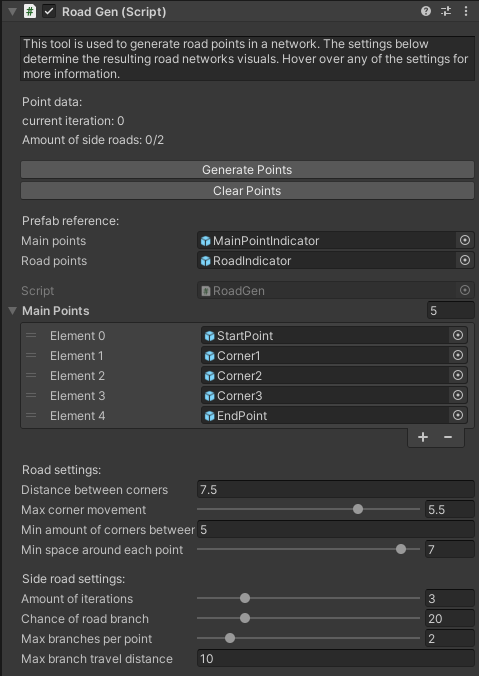

The project
Download Project Here:

I recently made a procedural road generator for Unity. I utilized new techniques like the way I show the roads to the user by use of the lines.
These lines are an editor only visual to minimize the performance hit.
I have provided the files to play with this yourself, however I have to add that this tool has not been perfected so some problems may occur.
I initially planned to have the tool be a lot more extensive and be able to have various shapes (like urban).
However, as I planned to only spend around 70 hours on this I had to scale back at an early stage.
Demo
In this demo video only the main workflow of the tool is shown. Not all functionality can therefore be seen here.
The inspector UI
Inspector for the generator. This is made with a custom Editor class. Each variable has tooltips for further information.
Example of generation
An example of how the road generator can be used:

The lines appear only when looking at the object. This example shows a more city sized road network.
Example of generation

This example is similar to the previous, however in this one I added some house locations (the red blocks).
These have been spawned with the procedural structure spawner I made. The roads automatically try to connect with the houses.
Example of generation

This example shows a more sparse view. This could be used for a small village or a simple adventure map.